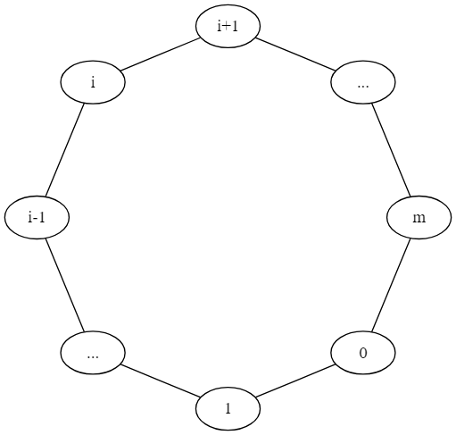

import numpy as np
def last_visited_node(m):
'''
Simulate the node that is last visited when all the m nodes numbered
from 1 to m have been visited
input:
m: int, the m+1 nodes are numbered from 0 to m
output:
n: int, between 1 and m, the number of the node that is last visited
'''
current_state = 0
unvisited_nodes = np.arange(1, m+1)
while len(unvisited_nodes) != 0:
rn = np.random.random()
if rn > 0.5:
if current_state < m:
current_state += 1
else:
current_state = 0
if current_state in unvisited_nodes:
indices_to_delete = np.where(unvisited_nodes == current_state)[0]
unvisited_nodes = np.delete(unvisited_nodes, indices_to_delete)
else:
if current_state != 0:
current_state -= 1
else:
current_state = m
if current_state in unvisited_nodes:
indices_to_delete = np.where(unvisited_nodes == current_state)[0]
unvisited_nodes = np.delete(unvisited_nodes, indices_to_delete)
n = current_state
return n
def prob_nodes(m, sample_size):
"""
Compute the probability that each of the m nodes (numbered 1 to m) is visited
lastly when all the m+1 nodes have been visited
input:
m: int, the m+1 nodes are numbered from 0 to m
sample_size: int, sample size for the simulation, i.e.,
how many experiments are performed
output:
probs: numpy array of shape (m,), the collection of m probabilities,
each representing the chance that the corresponding node is visited
lastly when all the m nodes have been visited
"""
probs = np.zeros(m)
for i in range(sample_size):
node = last_visited_node(m) # node can be an integer between 1 and m
probs[node-1] += 1
probs /= probs.sum()
return probs1 Stochastic Processes
A stochastic process \(\{X(t), t \in T\}\) is a collection of random variables. That is, for each \(t \in T\), \(X(t)\) is a random variable. The index \(t\) is often interpreted as time and, as a result, we refer to \(X(t)\) as the state of the process at time \(t\). For example, \(X(t)\) might equal the total number of customers that have entered a supermarket by time \(t\); or the number of customers in the supermarket at time \(t\); or the total amount of sales that have been recorded in the market by time \(t\); etc.
The set \(T\) is called the index set of the process. When \(T\) is a countable set the stochastic process is said to be a discrete-time process. If \(T\) is an interval of the real line, the stochastic process is said to be a continuous-time process. For instance, \(\{X_n, n = 0, 1, \dots\}\) is a discrete-time stochastic process indexed by the nonnegative integers; while \(\{X(t), t \ge 0\}\) is a continuous-time stochastic process indexed by the nonnegative real numbers.
The state space of a stochastic process is defined as the set of all possible values that the random variables \(X(t)\) can assume.
Thus, a stochastic process is a family of random variables that describes the evolution through time of some (physical) process.
Example 1.1 Consider a particle that moves along a set of \(m+1\) nodes, labeled \(0, 1, \dots, m\), that are arranged around a circle. At each step the particle is equally likely to move one position in either the clockwise or counterclockwise direction. That is, if \(X_n\) is the position of the particle after its \(n\)th step then
\[ P\{X_{n+1}=i+1|X_n=i\} = P\{X_{n+1}=i-1|X_n=i\} = \frac{1}{2} \]
where \(i+1 \equiv 0\) when \(i = m\), and \(i - 1 \equiv m\) when \(i = 0\). Suppose now that the particle starts at \(0\) and continues to move around according to the preceding rules until all the nodes \(1, 2, \dots, m\) have been visited. What is the probability that node \(i, i = 1, \dots, m\), is the last one visited?
Solution 1.1. Surprisingly enough, the probability that node \(i\) is the last node visited can be determined without any computations. To do so, consider the first time that the particle is at one of the two neighbors of node \(i\), that is, the first time that the particle is at one of the nodes \(i-1\) or \(i+1\) (with \(m+1 \equiv 0\)). Suppose it is at node \(i-1\) (the argument in the alternative situation is identical). Since neither node \(i\) nor \(i+1\) has yet been visited, it follows that \(i\) will be the last node visited if and only if \(i+1\) is visited before \(i\). This is so because in order to visit \(i+1\) before \(i\) the particle will have to visit all the nodes on the counterclockwise path from \(i-1\) to \(i+1\) before it visits \(i\). But the probability that a particle at node \(i-1\) will visit \(i+1\) before \(i\) is just the probability that a particle will progress \(m-1\) steps in a specified direction before progressing one step in the other direction. That is, it is equal to the probability that a gambler who starts with one unit, and wins one when a fair coin turns up heads and loses one when it turns up tails, will have his fortune go up by \(m-1\) before he goes broke. Hence, because the preceding implies that the probability that node \(i\) is the last node visited is the same for all \(i\), and because these probabilities must sum to \(1\), we obtain \[ P\{i \text{ is the last node visited} \} = 1/m, i=1,\dots,m \]

Remark 1.1. The argument used in Example 25.1 also shows that a gambler who is equally likely to either win or lose one unit on each gamble will be down \(n\) before being up \(1\) with probability \(1/(n+1)\); or equivalently \[ P\{\text{gambler is up 1 before being down }n\} = \frac{n}{n+1},\,\,i=1, \dots, m \] Suppose now we want the probability that the gambler is up \(2\) before being down \(n\). Upon conditioning on whether he reaches up \(1\) before down \(n\), we obtain that
\[ \begin{aligned} P & \{\text { gambler is up } 2 \text { before being down } n\} \\ & =P\{\text { up } 2 \text { before down } n \mid \text { up } 1 \text { before down } n\} \frac{n}{n+1} \\ & =P\{\text { up } 1 \text { before down } n+1\} \frac{n}{n+1} \\ & =\frac{n+1}{n+2} \frac{n}{n+1}=\frac{n}{n+2} \end{aligned} \]
Repeating this argument yields that \[ P\{\text{gambler is up } k \text{ before being down }n\}=\frac{n}{n+k} \]
Below, we use Python to simulate the process and numerically determine the probability that a node is the last one visited, and compare the numerical results with the theoretical ones.
Consider a case where there are 11 nodes (\(m=10\)), and we simulate the process \(10000\) times and compute the probability that each node is last visited . The result is in agreement with the theoretical one (\(1/m\)).
print(prob_nodes(10, 10000))[0.1005 0.1014 0.0976 0.0974 0.1031 0.0988 0.1003 0.0973 0.1066 0.097 ]